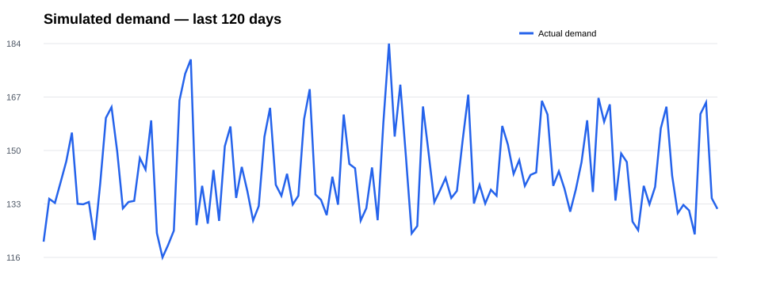
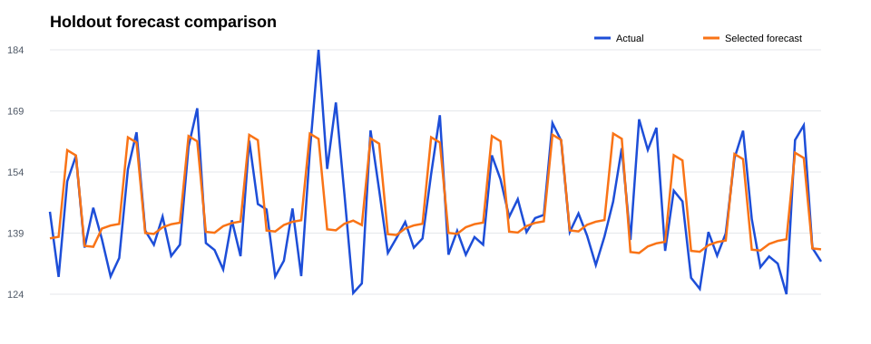

Seasonal naive
MAE 16.70
RMSE 19.75 · MAPE 11.60%
This dashboard uses simulated retail-demand data for portfolio demonstration. It is not a production business forecast.
The selected model is Trend + calendar, based on the lowest holdout MAE.
MAE 16.70
RMSE 19.75 · MAPE 11.60%
MAE 7.00
RMSE 9.63 · MAPE 4.82%


| Date | Forecast units |
|---|---|
| 2025-06-24 | 137.26 |
| 2025-06-25 | 137.66 |
| 2025-06-26 | 137.28 |
| 2025-06-27 | 159.07 |
| 2025-06-28 | 158.55 |
| 2025-06-29 | 136.28 |
| 2025-06-30 | 136.56 |
| 2025-07-01 | 133.50 |
| 2025-07-02 | 133.90 |
| 2025-07-03 | 133.52 |